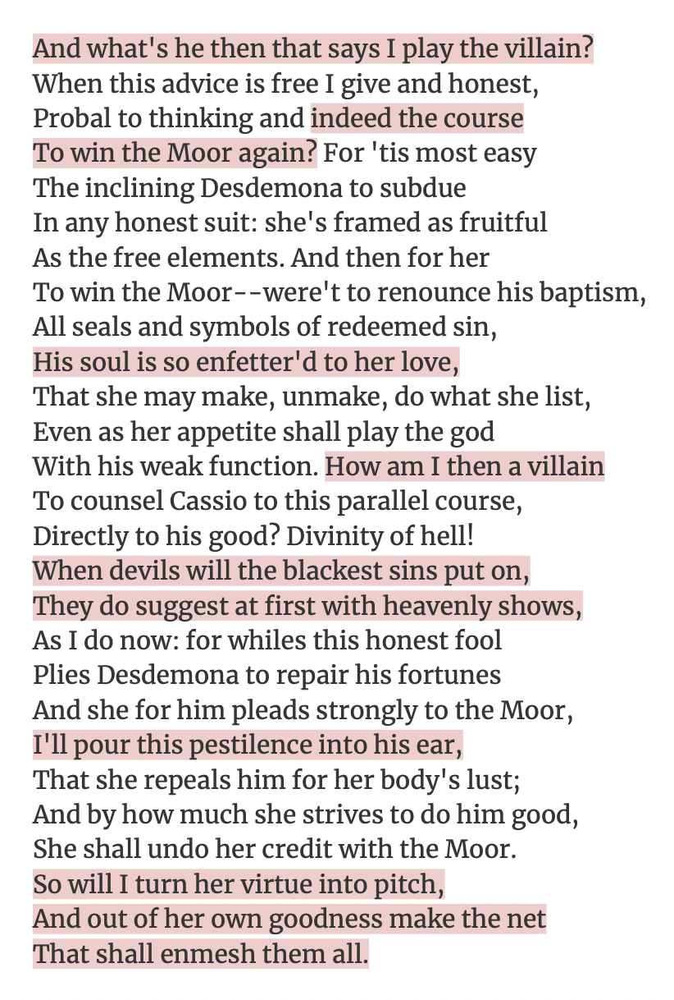

The Shakespearean Soliloquy


Shakespeare is perhaps the most well-known playwright- everyone knows who Shakespeare is. How could I do a research project into monologues without including his iconic soliloquies?
In this video, I talk about Shakespeare and his soliloquies: what soliloquies are, how they were used, and more!
I have a love-hate relationship with Iago in that I hate him deeply but love his dialogue. This speech is one of his most iconic, and most infuriating, and a wonderful example of how soliloquies can draw the audience into the play.
